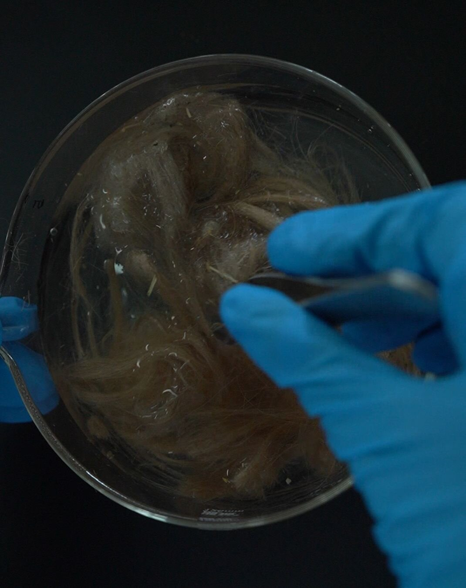
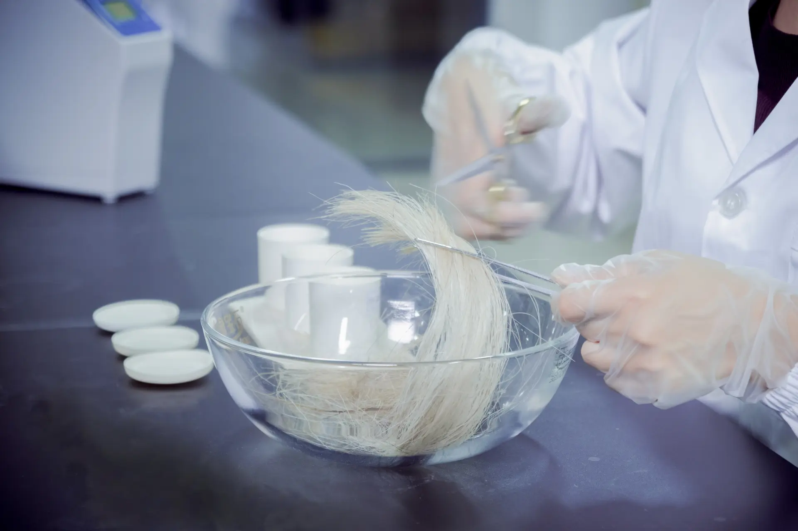

Quick Answers
How much hair or fur does a 1 ct memorial diamond require?
Approximately 6 g of hair or fur; 10–20 g is recommended as a safety margin. Botanical sources — petals, leaves, heartwood — require 15–30 g because plant tissue has lower carbon density than keratin. (BioGem Lab Technical Data)
Can cremated remains be turned into a diamond?
No. A one-carat diamond requires on the order of 5 kg of biogenic carbon, while total cremains weigh only 2–3 kg and are mostly inorganic mineral. Ash-based requests are declined at intake.
When does the 60-day production window start?
Only after the sample passes a three-point intake inspection — weight, visual, moisture — and the partner confirms the order. Shipping and customs time sit outside the production window.
What quality is guaranteed at the end of the cycle?
Colorless E–H color, VVS–SI clarity, Ideal cut, certified with CCIC traceability and ILDA third-party timestamped documentation. Process yield is 98.7%; growth-stage failures are covered by remake policy, not negotiation.
Introduction: Intake Is the Quality Boundary
Every memorial diamond partnership begins with the same physical act: someone, somewhere, collecting a few grams of hair, fur, or plant material and putting it in a package. Everything that follows — carbon extraction at 99.95%+ purity, HPHT synthesis at 5.5 GPa and 1,450 °C, the 60-day production cycle — depends on the quality of those few grams at the moment they arrive at our laboratory in Luoyang.
This is why BioGem Lab treats sample intake as a formal stage of manufacturing, not an administrative detail. Intake is the quality boundary of the entire process: a compromised sample that passes through it silently becomes a compromised diamond 60 days later. A standardized intake protocol protects the partner — a pet crematorium, funeral home, or memorial retailer — the end customer, and the manufacturer simultaneously.
This article documents that protocol: what we accept, in what quantities, how samples should be collected and shipped, what happens on receipt, and what we refuse and why. It is written for partners who run their own sample collection at the point of care and want their intake procedure to survive any factory audit.
Sample Quantities by Source: The Acceptance Table
The first question every partner asks is quantitative. The answer depends on the carbon density of the feedstock, and it is fixed by our extraction chemistry, not by marketing:
| Source type | Minimum | Recommended | Typical output |
|---|---|---|---|
| Human hair | 6 g | 10–20 g | 1.0 ct |
| Pet fur | 6 g | 10–20 g | 1.0 ct |
| Botanical (petals, leaves, heartwood) | 15 g | 15–30 g | 1.0 ct |
BioGem Lab Technical Data. For the full carat-by-sample-type matrix, see our memorial diamond size guide.
Two facts sit behind this table.
Keratin is carbon-rich. Hair and fur are protein fiber built from keratin, approximately 50% carbon by mass. Six grams of clean keratin fiber yields sufficient purified carbon for a one-carat diamond after our extraction and graphitization stages, with margin.
Plant tissue is carbon-dilute. Petals, leaves, and woody material contain 40–50% carbon in bulk tissue, but much of it is bound in water-rich structural and metabolic compounds that are removed during preparation. The practical consequence: botanical sources need roughly 2.5× the mass of hair to deliver the same carbon yield. For per-source yield detail, see our comparison of human hair, pet fur, and botanical feedstocks.
More sample than the minimum is always better. Submitting 10–20 g instead of 6 g costs the end customer nothing and gives the extraction process headroom for the sorting and purification losses that are inevitable with real-world material.
Q: What is the minimum hair sample for a 1 ct memorial diamond?
A: Approximately 6 grams of hair or fur. We recommend 10–20 g as a safety margin. Botanical sources require 15–30 g due to lower carbon density. (BioGem Lab Technical Data)

The Intake Standard: What We Accept and What Compromises a Sample
BioGem Lab accepts three feedstock classes: human hair, pet fur, and plant fiber. Within those classes, intake quality is defined by three properties.
Dryness. The sample must be fully dry at packing. Moisture trapped in a sealed container breeds mold within days, and mold is the most common intake failure we record. Hair collected after washing should be air-dried completely before it is bagged; fur collected in humid climates needs the same discipline. If a sample arrives with elevated moisture, our intake procedure dries it before processing — but a sample that has been wet long enough to grow mold is rejected outright, because fungal contamination degrades the keratin we need to recover.
Cleanliness — natural oils are fine; foreign matter is not. Hair and fur do not need to be laboratory-sterile. Natural sebum and ordinary environmental exposure do not survive our purification stage, which is exactly what it exists for. What does compromise a sample is foreign material mixed into the fiber: soil, bedding, litter, synthetic filling from a toy, or another animal's hair collected by accident. Every foreign material class either dilutes the carbon yield or introduces elements we then have to strip out at purification.
Chemical treatment — mostly irrelevant, with one exception. Dyes, peroxide treatments, and styling products change the color of hair, not its carbon skeleton. Treated hair processes identically to untreated hair through our extraction line, and treatment history has no effect on the color of the resulting diamond — diamond color in HPHT synthesis is governed by nitrogen uptake during growth, not by the cosmetics history of the feedstock (see our analysis of nitrogen, boron, and lattice defects). The one exception is heavy product residue — wax, gel, hairspray buildup — which should simply be washed out before collection. It does not harm the diamond; it just wastes purification capacity.
Q: Does dyed or chemically treated hair affect the memorial diamond?
A: No. Dyes and treatments change hair color, not its carbon structure. Diamond color is governed by nitrogen uptake during HPHT growth. Wash out heavy styling-product residue before submission.
The Six-Step Partner Protocol
Everything above compresses into six operational steps a partner can print and hand to staff.
- Confirm quantity against the acceptance table. Weigh the sample before collection begins, not after. A kitchen scale accurate to 1 g is sufficient for the 6 g threshold.
- Collect clean and dry. Collect after any washing has fully dried. Avoid collecting from bedding, floors, or grooming tools where the sample mixes with foreign fiber. For pets, collect from brushing rather than clipping where practical — brushed fur is naturally clean and dry.
- Label with the order ID, not personal details. Every container is labeled with the partner's order ID. We deliberately design intake so that no customer name, pet name, or address needs to appear on the sample container — privacy protection is structural, not aspirational. End-customer identity stays in the partner's own order system.
- Seal moisture-proof. Double-bag in sealable plastic, or use a rigid container with a gasketed lid for botanical material. The container only has to do one thing: keep atmospheric moisture away from the sample between collection and lab receipt.
- Ship tracked, declare contents honestly. Use a tracked courier service and state the contents accurately on the customs declaration ("dry hair/fiber sample for laboratory processing, no commercial value" as applicable). One cross-border note from operational experience: animal-derived material entering China can face customs inspection depending on the origin country, and clearance is sometimes slow. Build that possibility into the customer-facing timeline promise — it is outside the 60-day production window, which starts at intake inspection, not at shipment.
- Confirm receipt. We notify the partner when the sample arrives and again when it passes intake inspection. The 60-day production window opens only after the second notification.

What Happens on Receipt at the Laboratory
Intake inspection is a defined procedure with three recorded checks, performed before any processing commitment is made:
- Weight verification — against the order's declared sample mass. A shortfall here triggers an immediate notification; a sample below the 6 g threshold can still proceed for a smaller target carat, but only after the partner confirms the revised target in writing.
- Visual inspection — for mold, foreign fiber, staining, or contamination under magnification. Failed visual inspection is a rejection, not a workaround: we will not process a sample whose carbon integrity we doubt.
- Moisture check — gravimetric, on a sample cut. Elevated moisture triggers a drying cycle before processing begins.
Only after all three checks pass does the sample enter the production queue as a tracked batch with its own chain-of-custody record — the same batch identity that later anchors the CCIC traceability certificate and the ILDA third-party documentation (timestamped video and photographic records of the extraction) that the end customer receives with the finished diamond.
From there the chemistry takes over: sorting, carbon extraction and purification to 99.95%+ purity, graphitization, and HPHT synthesis at 5.5 GPa and 1,450 °C over an 18–25 day growth stage inside the full 60-day cycle (see biological carbon extraction and our production cycle overview). The intake stage is invisible in the final product — which is precisely the point. The customer never sees the protocol; they only see a certified diamond that arrived on schedule.
Run Your Own Intake to Laboratory Standard?
Request a free OEM consultation — send your target market and product specifications, reply within 24 hours. Email partners@biogemlab.com or message us via WhatsApp on the contact page.
Rejected and Edge-Case Materials
Cremated remains — declined. This is a chemistry constraint, not a policy preference. A one-carat diamond requires on the order of 5 kg of biogenic carbon. A complete set of human cremains weighs 2–3 kg in total, and nearly all of that mass is calcium phosphate mineral, not carbon. There is physically nothing to extract. Any supplier claiming otherwise is either diluting the remains with generic industrial carbon or misrepresenting the product. We explain the full arithmetic in our FAQ article on ash-based requests.
Mixed samples from multiple pets. Accepted, with a permanent caveat we state in writing: hair from two or more animals cannot be separated once combined. The resulting diamond contains the carbon of every source in the package. Most partners who ask about this actually want exactly that outcome — one diamond from both cats, both dogs, parent and child pets — and we simply make the irreversibility explicit before processing begins.
Very short or sparse hair. Length is irrelevant; carbon content is what matters. Even very short clippings meet the intake standard if they meet the mass threshold, though brushing remains the cleaner collection method.
Colored diamond requests — declined. We produce colorless diamonds in the E–H range. Fancy colors require controlled doping programs that are a different manufacturing discipline entirely, and we do not offer them (see why doping is a separate engineering problem in our synthetic diamond engineering analysis).
Soil-contaminated or mold-damaged material. Rejected at visual inspection. See the intake standard above.
Q: Can cremated remains be turned into a diamond?
A: No. A 1 ct diamond requires ~5 kg of biogenic carbon; total cremains weigh 2–3 kg and are mostly mineral. We decline ash-based requests at intake and explain the arithmetic in our FAQ.
Explore Manufacturing Capabilities
The carbon purification line, HPHT press fleet, and the ~60-day production cycle behind the intake protocol above.
What the Protocol Guarantees
A standardized intake boundary exists to make downstream promises enforceable:
- Schedule. The 60-day production window is only committed after intake inspection passes — a compromised sample never silently enters the queue and burns two months of a customer's patience.
- Quality. Colorless E–H, VVS–SI clarity, Ideal cut, certified. Our process yield of 98.7% means growth-stage failures are rare; when they do occur, our remake policy applies rather than a negotiation.
- Traceability. Batch-level identity from the moment intake passes, documented through CCIC certification and ILDA third-party timestamped records. A partner answering an end customer's "how do I know this is really from my pet?" question has documentation, not reassurance.
- Auditability. Every intake record is retained. A partner's own factory audit — or their customer's — can trace any diamond back to a weighed, inspected, logged sample. The audit framework we recommend for vetting any manufacturer, including us, is documented in our factory audit guide.
The carbon pre-extraction process behind this protocol is covered by Chinese invention patent ZL 2010 1 0565778.9. Partners evaluating our line against alternatives can review the technology overview and the manufacturing page before contacting the laboratory.
Frequently Asked Questions
What is the minimum hair sample for a 1 ct memorial diamond?
Approximately 6 grams of hair or fur; 10–20 g is recommended as a safety margin. Botanical sources require 15–30 g due to lower carbon density. (BioGem Lab Technical Data)
Can hair from multiple pets be combined into one diamond?
Yes. Combined samples are processed as a single carbon source and cannot be separated once mixed; we confirm this irreversibility in writing before processing begins.
How should a sample be packaged and shipped?
Fully dry, double-bagged or in a gasketed rigid container, labeled with the order ID only, shipped via tracked courier with honest contents declaration. Cross-border animal-material shipments may face customs inspection; that time sits outside the 60-day production window.
What happens if a sample fails intake inspection?
The partner is notified before any processing. Mold-damaged or contaminated samples are rejected; minor shortfalls trigger a written confirmation of a revised target carat.
When does the 60-day production window start?
Only after the sample passes the three-point intake inspection (weight, visual, moisture) and the partner confirms the order. See our production cycle overview for the full timeline.
Do you accept cremated remains?
No. The carbon arithmetic is physically impossible: ~5 kg of biogenic carbon needed vs 2–3 kg total cremains, mostly mineral. Full arithmetic in our ash FAQ article.
What quality is guaranteed for the finished diamond?
Colorless E–H color, VVS–SI clarity, Ideal cut, with CCIC certification and ILDA third-party timestamped traceability. Process yield 98.7%; remake policy covers growth-stage failures.
Can I get a colored memorial diamond?
No. We manufacture colorless diamonds only (E–H). Fancy-color production is a separate doping discipline we do not offer.
Data Sources
All process parameters, sample quantities, and quality figures in this article are production data from BioGem Lab's own operating records (BioGem Lab Technical Data): the 60-day total cycle, 18–25 day HPHT growth stage at 5.5 GPa / 1,450 °C, ≥99.95% carbon purity, E–H colorless output, VVS–SI clarity, 98.7% process yield, and the 6 g / 10–20 g / 15–30 g submission standards. Keratin carbon content (~50% by mass) reflects standard protein chemistry. Patent: ZL 2010 1 0565778.9.
Li Lihua — Chief Scientist
Patent inventor ZL 201010565778.9. View profile →
Standardize Your Sample Intake
Send us your target market and product specifications; we reply within 24 hours with the full partner intake protocol and OEM program terms.
Related Articles
Memorial Diamond Size Guide: Carat Weight by Sample Type
The full carat-by-sample-type matrix — how 6 g of hair or fur maps to finished stone weight, and how to set customer expectations before collection begins.
Biological Carbon Extraction: From Hair to Graphite
The purification chemistry that turns keratin fiber into 99.95%+ carbon feedstock — and why intake quality decides extraction efficiency.
Factory Audit: How to Vet a Memorial Diamond Manufacturer
The six-area on-site checklist, the remote audit protocol, and the six red flags that should end the conversation — including how to audit a partner's intake procedure.